BME | Machine Learning - Support Vector Machine SVM
Linear SVM
Set up
Given n data points , where is 1 or -1, indicating which class belongs to. Each is a p-dimensional real vector.
The goal of SVM is to find a maximum-margin hyperplane that separates all points based on and , ensuring the maximum distance from the hyperplane to the nearest points of both groups.
SVM Objective: Find a hyperplane that maximizes the margin.
Hyperplane Definition:
Margin Definition: The distance of the nearest point to the hyperplane.
Hard Margin SVMs
Assumption: Data can be completely separated by hyperplane .
Objective: Find a classifier that obtains the maximum margin.
Approach 1: Geometric interpretation (wiki approach)
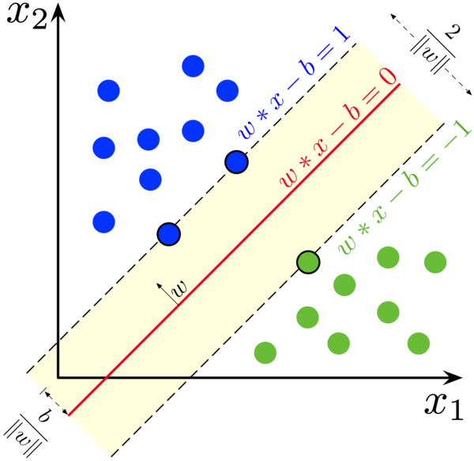
Firstly, two hyperplanes are created for the two groups of based on and :
For :
Hyperplane 1: , includes all data points above this hyperplane.
For :
Hyperplane 2: , includes all data points below this hyperplane.
These two hyperplanes are parallel, and the maximum-margin hyperplane lies between them.
Finally, all data points satisfy the following:
For :
For :
Combining both, we get for all .
The minimization equation and conditions are then derived as follows:
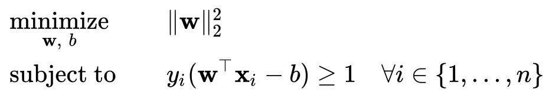
This can also be written in the form of the sign function: .
Approach 2: Deriving from formulas (classroom approach)
The objective can be formulated mathematically as:
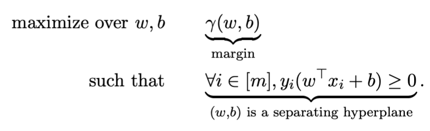
Simplified to:
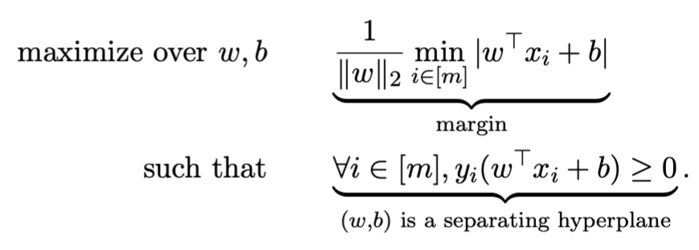
To ensure a unique solution despite different scales causing identical solutions, uniqueness is ensured by adding the following condition:
Substituting this condition into the original equation:
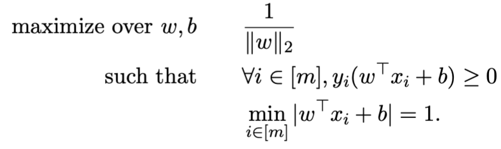
This simplifies to a convex quadratic optimization problem, where both the objective function and constraints are convex:
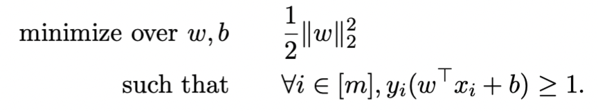
Finding and
To address the equation mentioned earlier and find and that minimize the objective function, we can obtain through Dual formulation and then derive using Support Vectors.
Obtaining through Dual formulation
Initialization and approach:
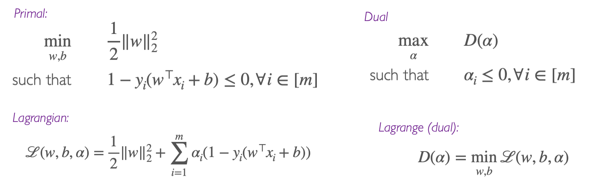
Step one involves writing the Lagrangian function (note ):
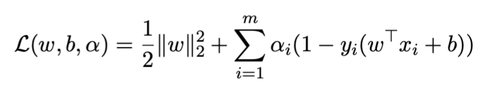
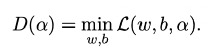
Step two involves taking partial derivatives with respect to and , setting them to zero:
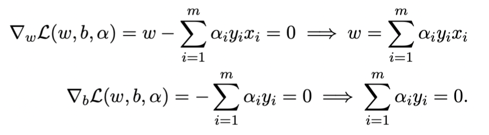
Step three involves substituting back into the original equation and simplifying:
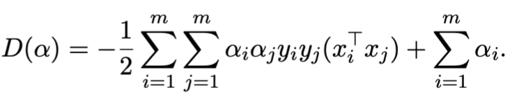
And satisfying:
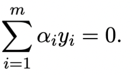
Step four involves expressing the dual function:
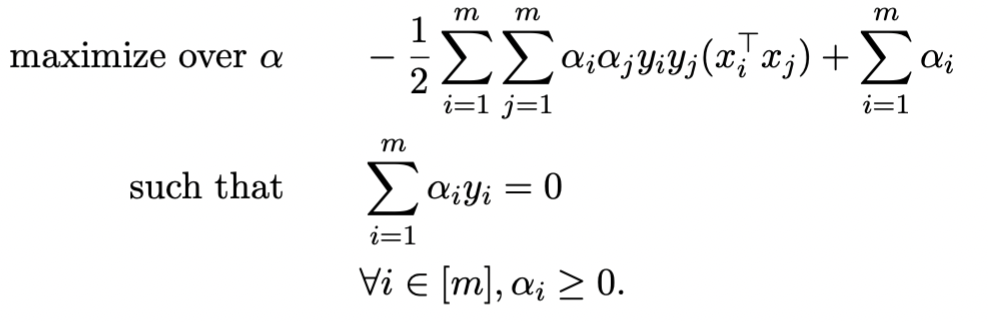
Step five involves solving the fourth step’s equation to get . Substituting into the equation results in obtaining :
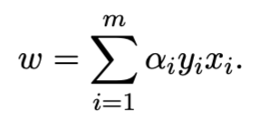
Obtaining through Support Vectors
Definition of support vector: Any data point where , precisely falling on the boundary, satisfying .
Assuming , which is the set of all where is greater than 0.
evolves to the following equation:
Using the complementary slackness condition from the KKT conditions, we arrive at the following equation:
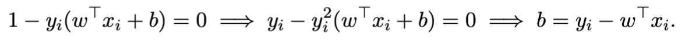
Hence, we obtain :
In simpler terms: Considering a set of , each can yield a (as their corresponding and differ), taking an average to reduce noise, resulting in a more accurate .
Result of the DUAL:
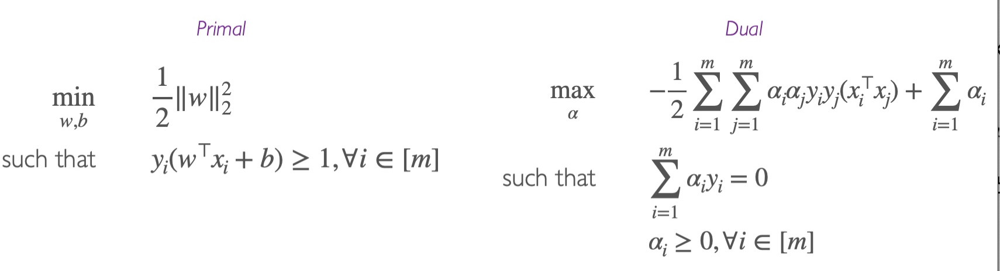
Soft Margin SVMs
Assumption: Data cannot be entirely separated by a hyperplane.
Due to non-separability, is infeasible. Thus, we can make it feasible by adding slack variables () to relax the constraint.
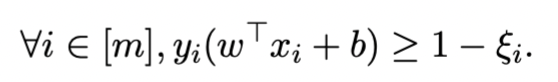
Where:
- signifies point is correctly classified and satisfies the large margin constraint.
- signifies point is correctly classified but does not meet the large margin constraint.
- signifies point is misclassified.
To ensure is not too large, we increase the penalty in the original equation:
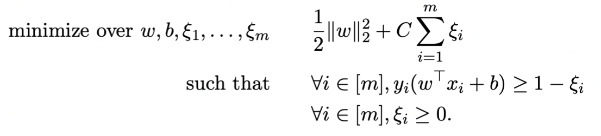
Where controls the penalty’s size. If is large, it degrades to a hard-margin SVM.
The above equation is still a convex quadratic optimization problem. We can rewrite it as the dual:
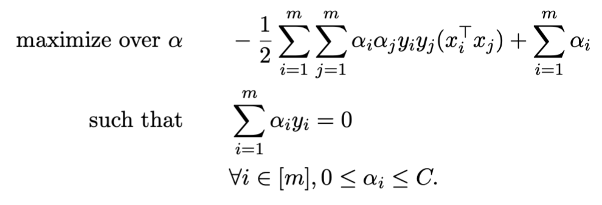
Following steps similar to the hard margin SVM, we can solve using the dual.
Viewing from a Loss Minimization Perspective
Soft-SVM can also be written in the form of minimizing hinge loss:
If , i.e., is in the correct class, the output is 0; otherwise, it’s , the distance from the point to the margin.
Thus, SVM can be written as (where ):
Upon introducing slack variables, it becomes:
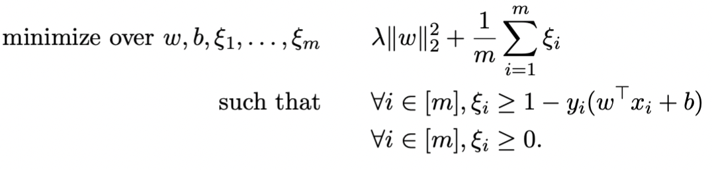
Now, if we set , this equation becomes the soft-SVM.
Summary
Hard-Margin SVM
Optimization function
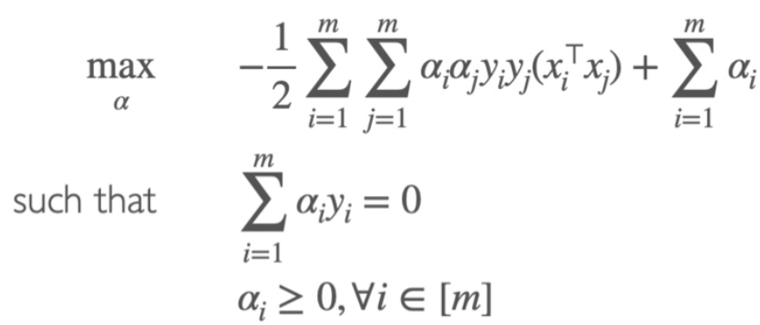
Classification vector
Support vector
Calculation of
Prediction function
Soft-Margin SVM
Optimization function
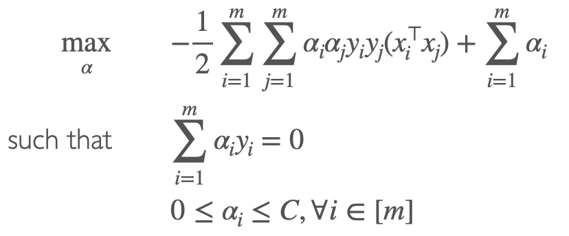
Classification vector
Support vector
Calculation of
Prediction function
Non-Linear Kernel SVM
Concept
Purpose: Address non-linearly separable data that cannot be solved simply by adding slack, such as two circles.
Approach: To separate, we map the data to a higher dimension using a feature map , i.e., .
Method: Replace dot product with a non-linear kernel.
Example
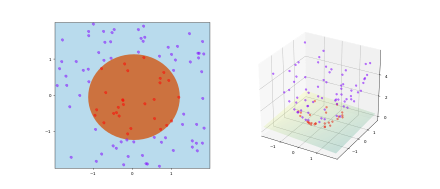
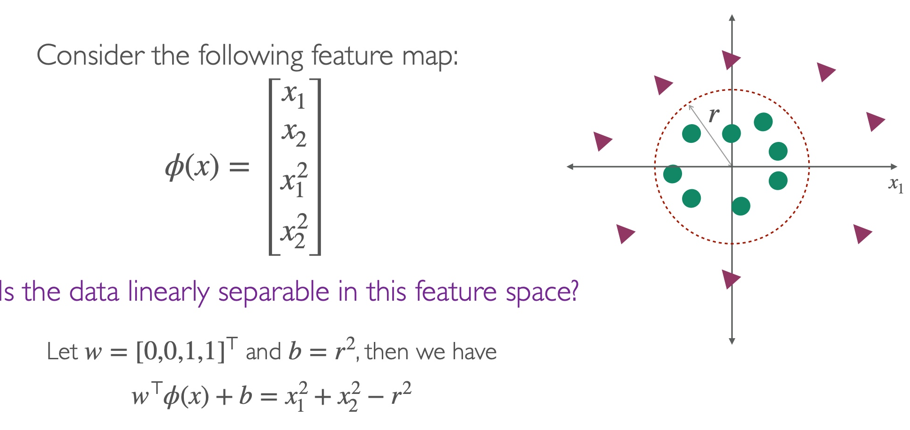
Linearizing Data through to obtain a new predictor function
Using feature map , map the training data from a non-linear input space to a linear feature space:
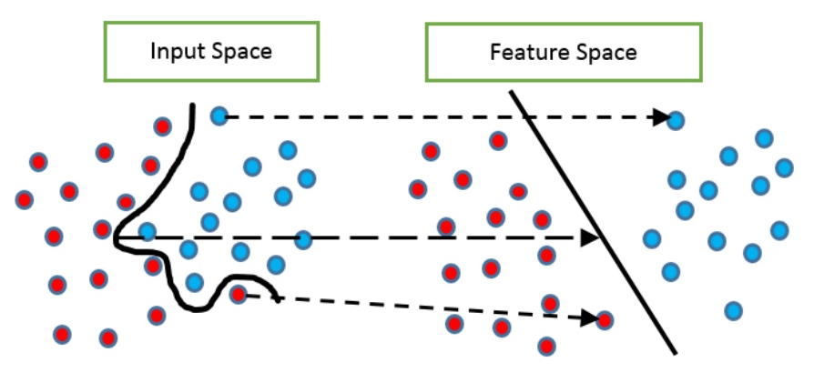
Thus, we obtain a linear predictor function:
Where is as follows, and represents the dimensionality of :
Solving the optimization function using Soft-SVM’s method
Since direct solving is too high-dimensional, we use the Soft-SVM method to solve:
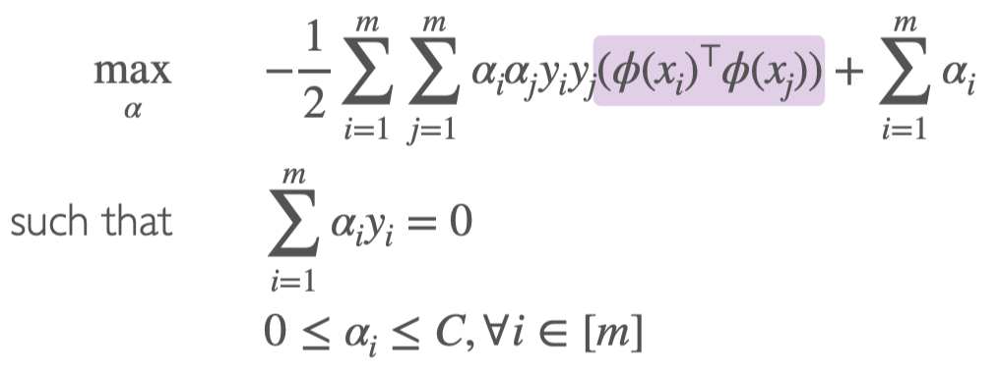
Equivalent to solving the inner product
We can simplify it to:
Constructing Kernels
To simplify the solving process, let the kernel be defined as:
For , the kernel matrix composed of is:
Where K is a symmetric and positive semi-definite matrix, satisfying these three conditions: 1) , 2) , 3) all eigenvalues are non-negative.
Common Kernels
Linear
Polynomial (homogeneous)
Polynomial (inhomogeneous)
Gaussian/Random Radial Basis Function(RBF): for
Kernelization, Expressing the original equations using k
- Prove the conclusion necessarily lies within the span of training points
- Rewrite the algorithm and predictor in the form of
- Replace with k, transforming with , and replace with
Iterative Solution (Comparing SVM and Kernel)
Soft-SVM
Optimization function
Classification vector
Supply vector
Calculation of
Prediction function
Perceptron Algorithm
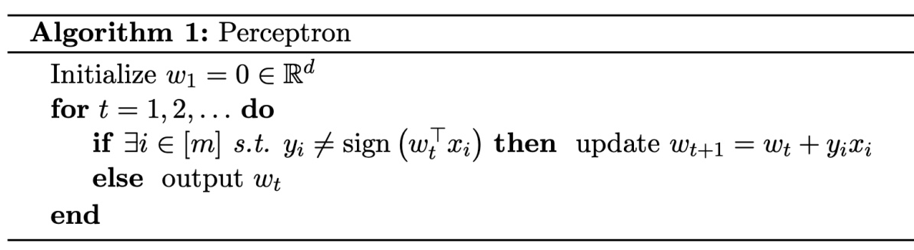
Kernel
Optimization function
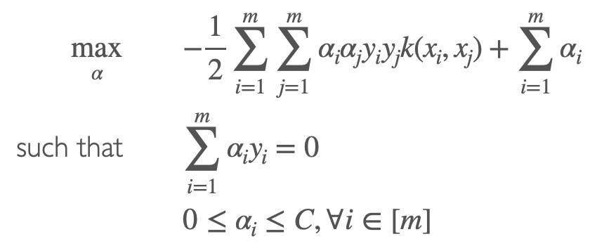
Classification vector
Supply vector
Calculation of
Prediction function
Perceptron Algorithm
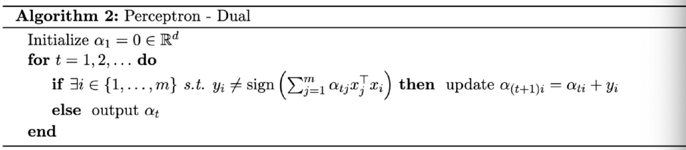
Kernel Representation of Rigid Regression
SVM’s Rigid Regression
Original expression for Rigid Regression
Replacing , where all elements in are the inner products
Prediction is
Kernel’s Rigid Regression
Replacing with K, where
Prediction is
where
optimal
Note: The content in this blog is class notes shared for educational purposes only. Some images and content are sourced from textbooks, teacher materials, and the internet. If there is any infringement, please contact aursus.blog@gmail.com for removal.